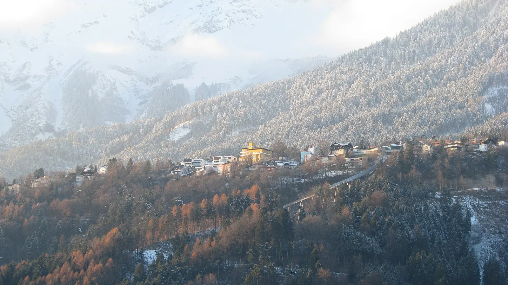
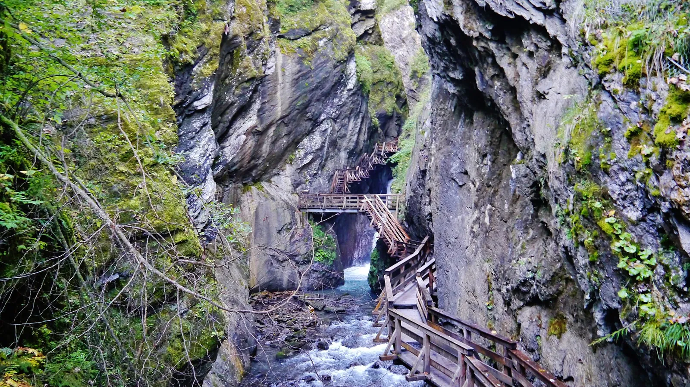
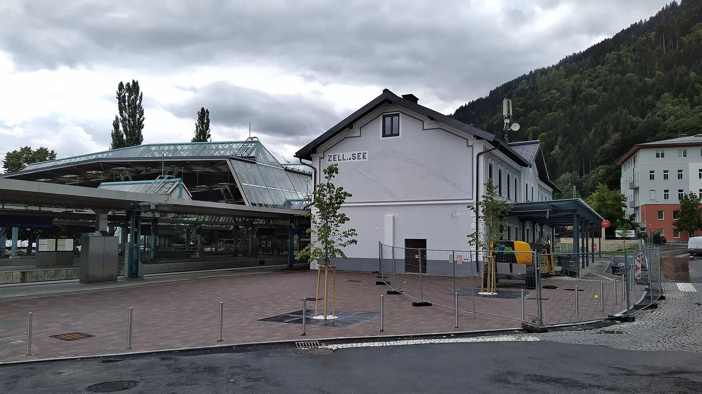
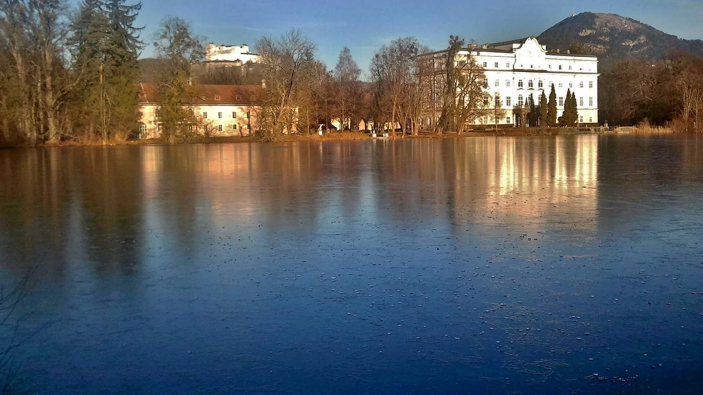
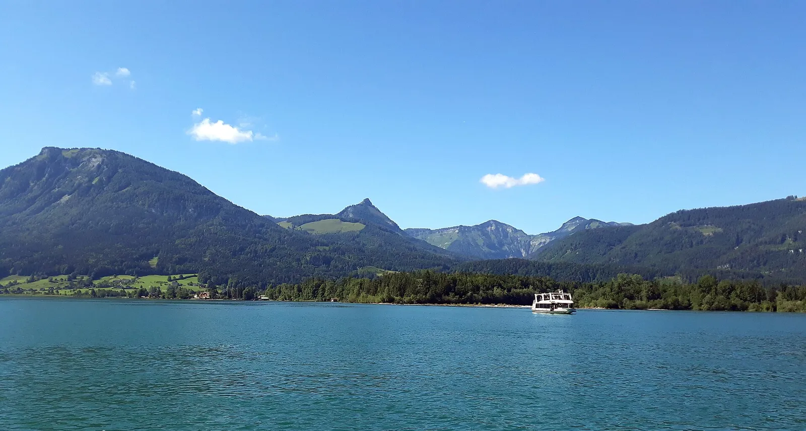
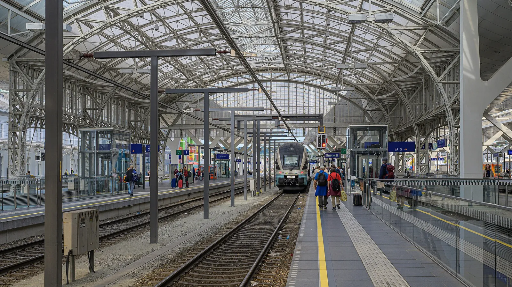
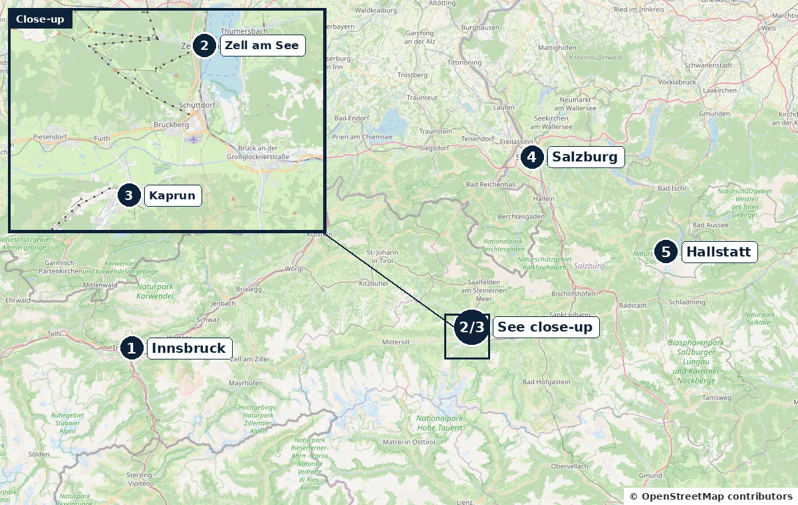

A gentle Austria holiday for travellers who like walking, scenery and good trains more than a packed schedule. Two nights in Innsbruck under the Nordkette mountains, two in the mountain village of Kaprun with a gorge walk, a glacier and a spa afternoon, then three in Salzburg for Mozart's old town, the Sound of Music tour and a day trip to Hallstatt. This combines our two suggested plans: it keeps the mountain stay at Kaprun and adds the Hallstatt day. Hallstatt is about 1 hour 15 minutes from Salzburg by car and 2 hours 30 minutes by train and bus, so we suggest a private driver for that day.
See it for yourself
Photos from the journey








Where you go
The journey on one map

Day by day, in short
Daily travel brief
Distances are by road for the whole day. The full plan with timings comes with your detailed itinerary.
-
1
Arrive in Munich and train to Innsbruck
- Train from Munich to Innsbruck: allow 1 hour after landing for baggage and passport control.
- Keep the first evening short; Innsbruck is best explored fresh in the morning.
-
2
Innsbruck at leisure and the Nordkette
- Nordkette cable car to Hafelekar: it can be 10°C colder at the top.
- The Innsbruck Card covers the cable car, museums and the Swarovski shuttle, and pays for itself in one day.
-
3
Train through the Alps to Kaprun
- Railjet to Zell am See: reserve seats; trains on Fridays and Sundays are busy.
- Most hotels here include a summer card with free buses and lifts.
-
4
The Sigmund Thun Gorge, the glacier and the spa
- Sigmund Thun Gorge: open from about May to October; check opening on rainy days.
- Kitzsteinhorn: Top of Salzburg: at over 3,000 m you may feel breathless.
- Kitzsteinhorn: Top of Salzburg: winter jacket, gloves and sunglasses, even in June.
-
5
Train to Salzburg
- Salzburg's old town is car-free; your hotel arranges a taxi to the nearest point.
-
6
The Sound of Music tour and Hangar-7
Hellbrunn Palace Mondsee Basilica Hangar-7
- Sound of Music tour: tours leave at about 09:30 and 14:00; book a day or two ahead.
- The Salzburg Card covers the fortress funicular, museums and city buses.
-
7
Day trip to Hallstatt
- Hallstatt village and lakeside: hallstatt is a small village where people live.
- Go early: tour buses arrive from about 10:30.
-
8
Train to Munich or Vienna and fly home
- Train to the airport: plan to reach the airport 3 hours before an international flight.
- Salzburg airport has few long-haul links; Munich and Vienna are easier for flights to India.
Local know-how
Travel hacks from our desk
Hotel deposit
Use a credit card for the deposit or pre-authorisation at check-in, never a forex or debit card. Forex cards cannot hold funds, many hotels refuse them, and a credit-card hold is released faster.
Cards and cash
On card machines, always choose to pay in euros, never in INR. Cards work almost everywhere. Carry about EUR 50 in cash for small cafés, toilets and markets.
Pickpockets
Busy stations, trams and squares are pickpocket hotspots. Keep passports in the hotel safe, carry a copy, and wear your bag in front in crowds.
Plugs, water and meal times
Plugs are the two round-pin type C and F at 230 volts (Switzerland uses type J; a type C plug fits). Tap water is safe to drink. Lunch is about 12:00 to 14:00 and dinner from about 18:30.
Austrian trains
ÖBB Railjet trains are comfortable and punctual. Seat reservations cost a few euros and are worth it on Fridays and Sundays. Luggage racks are at the end of each carriage.
When to go
Best time to visit for this journey
Late May, June and September: green, mild and quieter.
Late May to September. The Kaprun gorge and the glacier reservoirs open from about May, and Hallstatt is quietest in June and September.
The package
What's included
Included
- 7 nights with breakfast
- Train tickets with seat reservations
- Sound of Music tour
- Private car to Hallstatt and back
- 24/7 support from Blue Diamond Voyage
Not included
- International flights
- Schengen visa
- Cable cars, gorge and spa entry, unless your hotel card covers them
- Lunches and dinners
- Travel insurance
- City tax paid at hotels
The detailed itinerary
Some journeys are planned. Ours are crafted.
The full 8-day plan is ready: hour-by-hour timings, drive times, temple dress codes, food for your diet and a route map for every day. Tell us your dates and your city, and we'll send it to you on WhatsApp, shaped around you.
- Hour-by-hour timings
- A route map for every day
- Hotel and room details
- Visa and entry steps
- Vegetarian and Jain dining
24/7 travel desk+91 97148 59797+91 98242 21400
Photo and map credits
- Munich Airport: Julian Herzog (Website), CC BY 4.0, via Wikimedia Commons
- Hungerburg: Luftschiffhafen, CC BY-SA 4.0, via Wikimedia Commons
- Zell am See railway station: Gerd Fahrenhorst, CC BY 4.0, via Wikimedia Commons
- Sigmund Thun Klamm: Zairon, CC BY-SA 4.0, via Wikimedia Commons
- Zell am See railway station: Gerd Fahrenhorst, CC BY 4.0, via Wikimedia Commons
- Schloss Leopoldskron: Gerhard mauracher, CC BY-SA 4.0, via Wikimedia Commons
- Wolfgangsee: acediscovery, CC BY 4.0, via Wikimedia Commons
- Salzburg Hauptbahnhof: Isiwal, CC BY-SA 4.0, via Wikimedia Commons
- Maps: © OpenStreetMap contributors; road routes by OSRM.